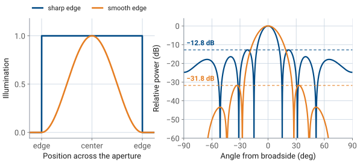
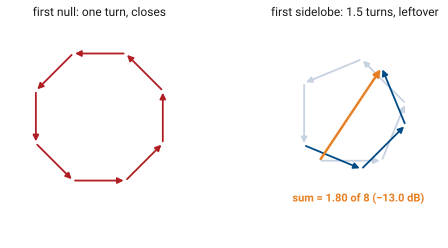
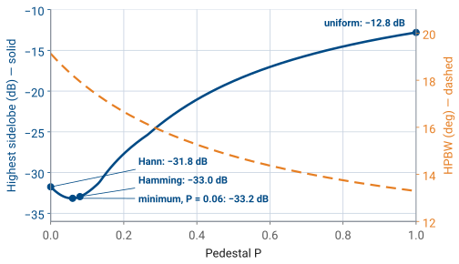
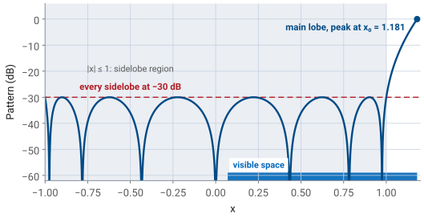
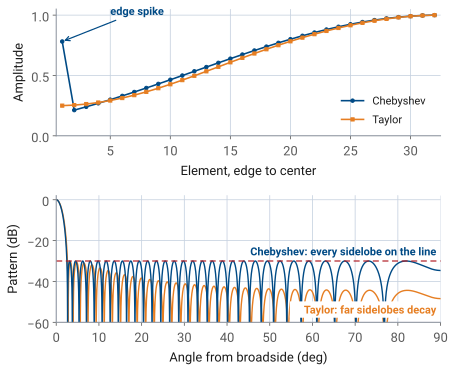
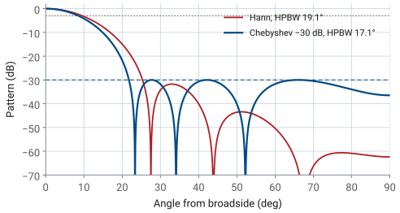
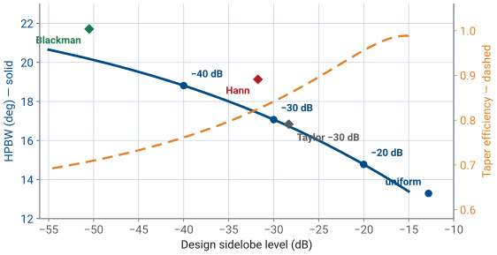
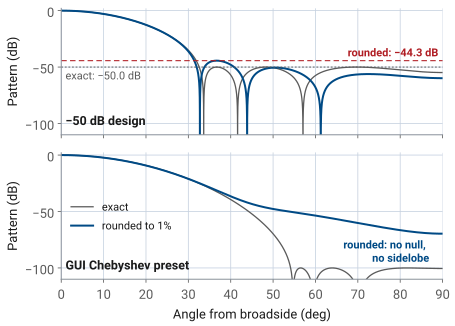
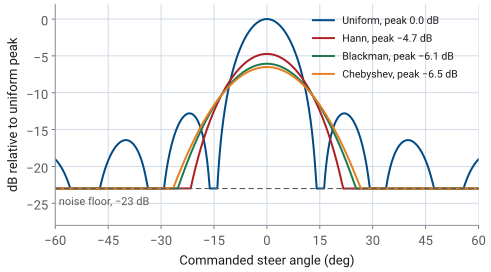

L22 - Sidelobes and Tapering#
Sidelobes and Tapering
Sidelobe level is set by the shape of the illumination, and shape is something you control.
Lesson 22 · Antennas, Phased Arrays, and Radar Systems · Dr. Neil Rogers
Printing
To print the slides, switch to present mode and print: one slide a sheet, with room for notes. Print from read mode for the whole lesson.
Learning Objectives
- I can apply amplitude tapering (uniform, cosine, Chebyshev, Taylor) to control sidelobe level and predict the pattern trade-off.
In the L20 Lab you swept the PHASER’s pattern and wrote down its sidelobes: a pair about 13 dB below the peak at roughly ±22°, then smaller sidelobes out to the edges of visible space. Those sidelobes are not a defect in the array, and no amount of careful alignment will remove them. They are the direct consequence of driving all eight elements at the same amplitude, and we can lower them by giving up beamwidth and directivity. This lesson shows how that trade works, what it changes, and how to pick a taper that meets a stated sidelobe specification.
Abrupt Edges and Sidelobes

The pattern is the transform of the illumination (L15).
A hard edge transforms to L15’s sinc, whose ripples decay only as \(1/(\pi u)\).
A soft edge removes the high space frequencies, and the sidelobes drop.
Lesson 15 established the Fourier relationship between an aperture and its pattern: the far-field pattern is the transform of the aperture illumination, and the transform variable is the space frequency
Read that relationship backwards and it explains the sidelobes. A uniformly illuminated aperture is a rectangle in space — full amplitude everywhere across the array, then nothing at all one element spacing beyond the ends. An abrupt edge is a discontinuity, and a discontinuity carries energy at every spatial frequency. The transform of a rectangle is Lesson 15’s sinc,
whose ripples fall off only as \(1/(\pi u)\). Those ripples are the sidelobes.
Softening the edge softens the pattern. If the illumination approaches zero gradually instead of stopping abruptly, the high space-frequency content that fed the sidelobes is no longer there, and the sidelobes drop. We call that gradual reduction of element amplitude from the center of the array toward its ends an amplitude taper, and every one of the tapers below is a different rule for how fast to fall off.
Sidelobe Level and Illumination Shape

Uniform first sidelobe: −12.8 dB at \(N = 8\), −13.3 dB continuous.
More elements narrow the main lobe; the sidelobes stay as high.
Amplitude shapes the beam (sidelobes, beamwidth). Phase steers it.
The same statement in array language uses Lesson 16’s chain of phasors: the eight element voltages drawn tip to tail, each turned the inter-element phase \(\psi\) from the last. At broadside the chain is straight. At the first null it has turned through one full circle, \(N\psi = 2\pi\), and closes into an octagon. Past the null it keeps winding, and near one and a half turns, \(N\psi = 3\pi\), the extra half turn does not close: that leftover arc is the first sidelobe. The length of a chain of \(N\) unit phasors is
with the second line evaluated at \(N\psi = 3\pi\).

For \(N = 8\) that is 0.225, or −13.0 dB; the exact peak, −12.8 dB at 21.9°, sits slightly short of \(3\pi\). As \(N\) grows, \(N\sin(3\pi/2N)\) approaches \(3\pi/2\), and the estimate approaches \(2/(3\pi) = 0.212\), or −13.5 dB, close to the continuous aperture’s −13.3 dB. The element count enters only through that slow limit, so the sidelobe level is a property of the shape of the illumination, not of its size: adding elements narrows the main lobe and moves the sidelobes inward, and lowers them only from −12.8 toward −13.3 dB.
Why Low Sidelobes Matter
−13 dB sidelobes see clutter at 1/20 of main-beam sensitivity; clutter runs 40 dB above the target.
A jammer only needs a sidelobe, not your beam.
A taper lowers every sidelobe at once; L24 nulls one.
A sidelobe is a direction the antenna is listening to when you did not ask it to. A search radar at −13 dB sidelobes sees ground clutter through those lobes at only one twentieth of its main-beam sensitivity, which is nowhere near enough when the clutter is 40 dB stronger than the target. A communications terminal with high sidelobes receives an adjacent satellite it was never pointed at, and transmits into one. A jammer off to the side does not need to be in your beam to deny it — it only needs to be in a sidelobe. Lesson 24 attacks that last problem directly by placing a null on the jammer; tapering is the cheaper, non-adaptive answer that lowers every sidelobe at once.
Cosine on Pedestal
Position \(p\) runs from \(-1/2\) to \(+1/2\) across the aperture.
Pedestal \(P\): the amplitude left at the edges.
\(P = 1\) uniform, \(P = 0.08\) Hamming, \(P = 0\) Hann.
A taper is a set of element amplitudes \(a_n\), \(n = 1 \ldots N\), normalized so the largest is 1. Three families cover essentially all practical work, and they differ in what they optimize.
The cosine-on-pedestal family starts from a shape rather than from a specification. Let \(p\) be position across the aperture normalized to its length, so \(p\) runs from \(-1/2\) to \(+1/2\). Then
where the pedestal \(P\) is the amplitude left at the edges. Setting \(P = 1\) gives the uniform taper, \(P = 0\) gives the Hann taper (a full cosine-squared falling to zero), and \(P = 0.08\) gives the Hamming taper. The PHASER GUI’s Hann preset is exactly this shape sampled at the eight element positions and renormalized, as the last row of the table in the next frame shows.
Sidelobes and Beamwidth by Pedestal
Pedestal \(P\) |
First sidelobe (dB) |
HPBW |
\(\eta_t\) |
|---|---|---|---|
1.00 (uniform) |
−12.8 |
13.2° |
1.000 |
0.50 |
−18.8 |
14.8° |
0.959 |
0.25 |
−25.8 |
16.2° |
0.884 |
0.08 (Hamming) |
−33.0 |
17.9° |
0.800 |
0.00 (Hann) |
−31.8 |
19.1° |
0.750 |

The element amplitudes behind each row, in percent:
Pedestal \(P\) |
\(a_n\) (%) |
|---|---|
1.00 (uniform) |
100, 100, 100, 100 |
0.50 |
57, 72, 89, 100 |
0.25 |
35, 57, 83, 100 |
0.08 (Hamming) |
19, 47, 79, 100 |
0.00 (Hann) |
12, 43, 77, 100 |
Only the inner four values are listed; the taper is symmetric, so elements 5 through 8 mirror elements 4 through 1.
Read the table downward and the trade is already visible: every step toward a smoother edge lowers the sidelobes and widens the beam. Note also that Hamming beats Hann on all three counts. Leaving a small pedestal at the edge cancels the first sidelobe of the cosine term against the first sidelobe of the pedestal, which is why \(P = 0.08\) is a named taper and not an arbitrary choice. The figure shows the trade as a curve: the sidelobe level falls as the pedestal shrinks, reaches its minimum, −33.2 dB, near \(P = 0.06\) on eight elements, and climbs again to Hann’s −31.8 dB at \(P = 0\), while the beam widens the whole way. Hamming’s 0.08 is the continuous-aperture optimum, and on eight elements it sits within 0.2 dB of the sampled one.
Chebyshev: Equal Ripple
State the sidelobe level; get the narrowest possible main lobe.
Every sidelobe sits exactly on the design level.
The Chebyshev (Dolph) taper starts from the specification instead. You state the sidelobe level you want, and Dolph’s construction returns the amplitudes that achieve it with the narrowest possible main lobe. The defining property is equal ripple: every sidelobe in the pattern sits at exactly the design level, none higher and none lower. That is what makes it optimal. A taper whose far sidelobes fall below the specification is providing suppression the specification did not require, and it widened the main lobe to get it.
The construction uses the Chebyshev polynomial \(T_{N-1}\), whose ripples between −1 and +1 are the equal sidelobes and whose rapid growth beyond \(x = 1\) is the main lobe. For an eight-element array the amplitudes come from matching the array factor to \(T_7\), as in the equations above, where \(R = 10^{\text{SLL}/20}\) is the voltage ratio between the peak and the sidelobes.
A polynomial appears because of Lesson 16’s array factor. Referencing the phase to the array center changes only the phase of \(AF\), and puts the eight elements at \(\pm\psi/2\), \(\pm 3\psi/2\), \(\pm 5\psi/2\), and \(\pm 7\psi/2\). A symmetric taper pairs them:
Each \(\cos((2m-1)\psi/2)\) is a polynomial of degree \(2m-1\) in \(\cos(\psi/2)\) (the multiple-angle identities), so the array factor is an odd polynomial of degree 7 in \(\cos(\psi/2)\), and the four amplitudes \(a_m\) are its four coefficients. Choosing a taper is choosing that polynomial. Of all polynomials of degree 7 that stay between −1 and +1 for \(\vert x\vert \le 1\), \(T_7\) grows fastest beyond \(x = 1\). Holding the sidelobe region inside ±1 fixes every sidelobe at \(1/R\) of the peak; growing fastest means the pattern reaches its peak \(R\) at the smallest \(x_0\), which pulls the first null in toward broadside and gives the narrowest main lobe. Any other set of amplitudes either lets a sidelobe rise above the specification or reaches the peak more slowly and widens the beam.

The substitution \(x = x_0\cos(\psi/2)\) puts broadside, \(\psi = 0\), at \(x_0\) and endfire, \(\psi = kd = 173^\circ\), at \(x_0\cos(86.5^\circ) = 0.07\). Visible space covers only that stretch of \(x\), so the PHASER sees the main lobe and the three ripples to its left, each at exactly −30 dB.
We will not carry the expansion out by hand. The widget below does it numerically, and the results for the three designs we will use are in the next table.
Taylor: The Buildable Chebyshev
Chebyshev on a big aperture spikes current at the edges.
Taylor holds the first \(\bar{n} - 1\) sidelobe pairs at the design level; the rest decay.
It removes the edge spikes and barely widens the beam; \(\bar{n} = 4\) to 6.

The Taylor taper is the one large radars are built with. A true Chebyshev design on a big aperture puts sharp spikes of current at the array edges, which is hard to build and gives up efficiency. Taylor’s design holds only the first \(\bar{n} - 1\) sidelobe pairs at the design level and lets the rest decay like a uniform aperture’s, which removes the edge spikes and widens the beam very little. The parameter \(\bar{n}\) is how many sidelobes the design holds at the specified level; \(\bar{n} = 4\) to 6 is typical.
The edge spikes follow from the Fourier reading at the start of the lesson. A step at the aperture edge produces ripples that fall off as \(1/(\pi u)\). A Chebyshev pattern holds every sidelobe at the same level all the way out, so its ripples do not fall off at all, and an illumination whose transform never decays needs something sharper than a step at each edge: an impulse. On a large array that impulse appears as edge elements driven harder than their neighbors. Letting the far sidelobes decay like a uniform aperture’s, as Taylor does, puts a plain step back at the edge and removes the spike. The figure shows both on a 64-element array at −30 dB: the Chebyshev edge element is 3.7 times its neighbor, and its sidelobes run flat on the design line out to endfire, while the Taylor amplitudes rise smoothly from the edge and its far sidelobes fall away.
Seven Tapers on Eight Elements
Taper |
Sidelobe |
HPBW |
\(\eta_t\) |
|---|---|---|---|
Uniform |
−12.8 |
13.2° |
1.000 |
Chebyshev −20 |
−20.0 |
14.8° |
0.956 |
Chebyshev −30 |
−30.0 |
17.1° |
0.841 |
Chebyshev −40 |
−40.0 |
18.8° |
0.761 |
Taylor −30, \(\bar{n} = 4\) |
−28.3 |
16.8° |
0.853 |
Hann |
−31.8 |
19.1° |
0.750 |
Blackman |
−50.5 |
21.7° |
0.655 |
All eight elements at \(d/\lambda = 0.481\); sidelobe levels are the highest sidelobe in dB relative to the peak, and the Chebyshev and Taylor designs are named by their design level in dB. The amplitudes and the beam broadening factor (HPBW relative to uniform) for each:
Taper |
\(a_n\) (%) |
Broadening |
|---|---|---|
Uniform |
100, 100, 100, 100 |
1.00 |
Chebyshev −20 dB |
58, 66, 88, 100 |
1.12 |
Chebyshev −30 dB |
26, 52, 81, 100 |
1.30 |
Chebyshev −40 dB |
15, 42, 76, 100 |
1.42 |
Taylor −30 dB, \(\bar{n} = 4\) |
29, 53, 82, 100 |
1.27 |
Hann |
12, 43, 77, 100 |
1.45 |
Blackman |
6, 27, 66, 100 |
1.64 |
The Taylor row shows both sides of the compromise. On only eight elements the sampled Taylor distribution does not hold its sidelobes exactly on the design line — the highest one lands at −28.3 dB rather than −30. Its beam and efficiency, 16.8° and 0.853, beat the −30 dB Chebyshev row only because it stops short of −30 dB. A Chebyshev design for the same −28.3 dB gives 16.7° and 0.859, better on both counts, as Dolph optimality requires. On eight elements Taylor gains nothing over Chebyshev; its advantage is on a large aperture, where it avoids the edge spikes. Sample a Taylor distribution on a 64-element array and the sidelobes land where they were designed to.
Tapers on the Array
Work through the widget before reading on. Step through the five tapers and watch three things at once: the bars redistribute amplitude away from the array edges, the main lobe widens, and the sidelobes drop. On the three Chebyshev settings, check that every sidelobe touches the dashed design line — that equal ripple is the whole point of the family, and it is what separates a Chebyshev design from a window function that happens to reach a similar level.
Then choose Cosine on pedestal and drag \(P\) from 1 down to 0: the highest sidelobe falls to its minimum, −33.2 dB, near \(P = 0.06\) and rises again toward Hann while the beam keeps widening. Finally, turn on Round to 1% with the Chebyshev −40 dB taper selected and watch its sidelobes leave the design line: the rounded gains reach only −39.2 dB, a first look at the setting-accuracy limit in Loading a Taper into the PHASER.
Beam Broadening
Outer elements contribute less, so the effective aperture shrinks. $\(\theta_\text{HP} \approx 0.886\ \frac{\lambda}{N d} \times (\text{broadening, } 1.1 \text{ to } 1.7)\)$
Deeper sidelobes always need more broadening.
Tapering has three separate consequences, and two of them are routinely confused with each other.
First, the main lobe gets wider. The physical aperture is unchanged, but the effective aperture is smaller because the outer elements now contribute less. For the uniform case the beamwidth follows Lesson 20’s rule,
and a taper multiplies that by a beam broadening factor between about 1.1 and 1.7. The broadening column in the table above is that factor. Deeper sidelobes always need more broadening, and the widget’s beamwidth readout is the direct measurement of it. The uniform 13.2° in the tables is the rule’s value; the exact eight-element pattern gives 13.3°. Every other beamwidth in the tables comes from its exact pattern, so each broadening factor, taken against the rule’s 13.2°, reads about 1% high.
Taper Efficiency
Signal adds as voltage, noise as power.
The fraction of uniform directivity (and SNR) the taper keeps.
Second, the taper efficiency falls. Consider the array on receive, looking at a source on boresight. Every element sees the same signal with the same phase, so the beamformer output voltage is \(\sum a_n\) times the per-element signal voltage, and the output signal power goes as \(\left(\sum a_n\right)^2\). Each channel also adds its own noise, independently of the others, so the noise powers add rather than the voltages, and the output noise goes as \(\sum a_n^2\). The signal-to-noise ratio is therefore proportional to
For a uniform taper that ratio is \(N^2/N = N\). Normalizing by the uniform case gives the taper efficiency
The same expression comes out of the transmit calculation, where the peak radiated intensity goes as \(\left(\sum a_n\right)^2\) and the total radiated power as \(\sum a_n^2\), so \(\eta_t\) is equally the fraction of the uniform array’s directivity, in Lesson 2’s sense, that the tapered array retains. It is a pure ratio, unchanged if we scale every \(a_n\) by the same factor. By the Cauchy-Schwarz inequality, as in Lesson 15, it never exceeds one, and it equals one only for the uniform taper.
This is Lesson 15’s taper efficiency, sampled. Lesson 15 wrote \(\eta_t\) as the squared integral of the aperture amplitude over the aperture length times the integral of its square; the sums here replace those integrals at the eight element positions. Lesson 15’s continuous cosine aperture gives 0.811, and the eight-element Hann taper gives 0.750.

Peak Drop on the Trace
The beam sweep does not renormalize between runs.
A coherent voltage loss: noise fell too, so sensitivity fell less.
Third, the peak of the measured trace drops. This is a different number, and it is the one you will read off the screen in the L22–L23 Lab. The GUI’s beam sweep plots received power against commanded steer angle, and it does not renormalize between runs. Setting six of the eight Element Gains sliders below 100% reduces the signal voltage, and the peak of the tapered trace lands
below the uniform trace’s peak. This is a coherent voltage loss, not a directivity loss. The sliders attenuate the noise along with the signal, so the array’s sensitivity did not fall by this much, but the plotted peak did.
Peak Drop Versus Directivity Loss
The first term is lost directivity; the second is signal turned down.
Hann preset: \(-4.7 = -1.2 - 3.5\) dB.

The two dB numbers are related, and keeping them separate is the difference between reading a sweep correctly and misreading it:
The first term on the right is the directivity we gave up. The second term is the average power gain of the eight channels — the signal we simply turned down.
For the Hann preset the split is \(-4.7 = -1.2 - 3.5\) dB. Only 1.2 dB of that 4.7 dB is a loss of antenna performance; the remaining 3.5 dB would come straight back if the hardware let you scale all eight gains up by the same factor. It does not, because 100% is already full scale.
Worked Example: A −30 dB Chebyshev
\(N = 8\), broadside |
Chebyshev −30 dB |
Hann |
|---|---|---|
Highest sidelobe |
−30.0 dB |
−31.8 dB |
HPBW |
17.1° |
19.1° |
\(\eta_t\) |
0.841 |
0.750 |
Peak drop |
−3.8 dB |
−4.7 |
Chebyshev matches Hann’s suppression with a 2° narrower beam and 0.5 dB more directivity.
The design problem is stated the way a customer states it: hold the sidelobes below some level, and tell me what it does to the beam. The procedure is short.
Pick the family. Use Chebyshev when the specification is a hard ceiling on every sidelobe and the array is small. Use Taylor when the array is large or the edge elements cannot be driven that hard. Use a cosine-on-pedestal window when the designer wants a shape rather than a specification, or when the beamformer only offers named presets.
Compute the amplitudes and normalize the largest to 1.
Evaluate broadening, \(\eta_t\), and the peak drop.
Check the result against the hardware’s amplitude resolution, because the hardware can only set amplitudes to about 1%.
Worked example — a −30 dB design on the eight-element array
Specification. No sidelobe above −30 dB relative to the peak, on \(N = 8\) elements at \(d/\lambda = 0.481\), broadside.
Amplitudes. The voltage ratio and the Chebyshev stretch factor are
Carrying out the Dolph construction and normalizing to the center pair gives
Taper efficiency. With \(\sum a_n = 5.18\) and \(\sum a_n^2 = 3.988\),
Peak drop on the trace.
Beamwidth. The pattern measures 17.1° at half power against 13.2° uniform, a broadening factor of 1.30.
Result. Sidelobes drop from −12.8 to −30 dB, a 17 dB improvement. The beam widens from 13.2° to 17.1°, the array loses 0.75 dB of directivity, and the displayed peak falls 3.8 dB.
Compare against the obvious alternative. The Hann window reaches a similar −31.8 dB, but its beam is 19.1° and its efficiency is 0.750. The Chebyshev design gets the same sidelobe suppression with a 2° narrower beam and 0.5 dB more directivity. This result is Dolph optimality: for a stated sidelobe level, no other set of amplitudes gives a narrower main lobe.

The overlay shows where the two designs differ. Hann reaches its sidelobe level with the first lobe and puts the rest of its suppression into far lobes the specification never asked for; the Chebyshev design holds every lobe at −30 dB and uses the margin to keep its main lobe narrower.
The Design Space on One Curve

Chebyshev runs the curve; windows sit above it.
About 0.2° of beam per dB of suppression.
\(\eta_t\) falls from 1.00 to 0.71.
The curve is the whole design space for this array. Chebyshev designs run along it and the window functions sit above it, which is the geometric statement of Dolph optimality: Blackman reaches −50 dB with a 21.7° beam, where the Chebyshev design at the same sidelobe level needs only 20.2°. The slope of the solid curve is the beamwidth a decibel of suppression takes. On eight elements the beam widens about 0.2° per decibel of suppression across the whole range, and the efficiency falls from 1.00 to 0.71 over the same span.
Loading a Taper into the PHASER
Normalize to the largest: sliders cap at 100%.
You can only go down, so Peak Gain falls.

The PHASER’s ADAR1000s set a gain as well as a phase on every element, and the course GUI exposes those as the Element Gains sliders Rx1 through Rx8, in percent of full scale. Converting a design to hardware settings is one line:
Normalize to the largest element, not to the sum, because the sliders cannot exceed 100%. For the worked example above you would enter 26, 52, 81, 100, 100, 81, 52, 26 and turn on Enforce Symmetric Taper so a slip on one slider is mirrored rather than left as an asymmetry. Two limits are worth knowing before you type:
The gain word resolves to about 1%, so the entered taper is quantized. Rounding the −30 dB design to whole percent moves its highest sidelobe to −29.9 dB, which is harmless. Trying to hold a −50 dB design to 1% amplitude steps is not, and Lesson 23 makes the general version of that argument for phase.
You can only go down. Every taper therefore lowers the peak signal on the trace, and the GUI’s Peak Gain readout will fall by the amount computed under Peak Drop on the Trace.
What limits a deeper design is not the curve but the hardware and the instrument. The −50 dB design puts its outer elements at 9% of full scale, where the gain word’s 1% step is an 11% error on that element, and the sidelobes it was designed for will not survive that. The beam sweep’s noise floor sits about 23 dB below the uniform peak, so this bench cannot confirm a design deeper than roughly −20 dB relative to its own peak. Specifying −50 dB when −30 dB would do gains nothing we can measure and gives up beamwidth, directivity, and setting accuracy. The figure shows both effects of the 1% step: rounding the −50 dB design to whole percent lifts its highest sidelobe to −44.3 dB, and rounding the GUI’s Chebyshev preset, which starts as a design of about −100 dB, fills in every one of its nulls.
The Four GUI Presets
Preset |
Predicted HPBW |
Peak drop (dB) |
|---|---|---|
Uniform |
13.2° |
0 |
Hann |
19.1° |
−4.7 |
Blackman |
21.7° |
−6.1 |
Chebyshev |
22.9° |
−6.5 |

The GUI ships four presets. Their gain lists and what theory predicts for each are below; copy these predictions down now, because the L22–L23 Lab measures them.
Preset |
\(a_n\) (%) |
First sidelobe |
|---|---|---|
Uniform |
100, 100, 100, 100 |
−11 to −13 dBc |
Hann |
12, 43, 77, 100 |
below the noise floor |
Blackman |
6, 27, 66, 100 |
below the noise floor |
Chebyshev |
4, 23, 62, 100 |
none in visible space |
Two things matter when the lab compares a sweep against this table. First, the sweep steps one 2.8125° phase LSB per point, which is about 0.9° of angle near broadside (L20 Lab), so a measured beamwidth reads to about a degree. Second, the sidelobe column says “below the noise floor” rather than giving a number. The sweep’s floor sits about 23 dB below the uniform peak, and every tapered preset here pushes its sidelobes under that. The figure draws the four predictions as the sweep would show them: theory patterns on the uniform peak’s scale, so each taper’s peak drop shows, floored at −23 dB. You will be able to state an upper bound on the sidelobes in the L22–L23 Lab, not a value.
Note
The GUI’s Chebyshev preset is not the −30 dB design worked above. Its gain list of 4, 23, 62, 100 matches a Dolph design for about −100 dB, and rounding that design to whole percent fills in its nulls: the pattern has no null and no sidelobe anywhere in visible space. Its main lobe falls steadily, through −48 dB at 50°, to −70 dB at endfire. With no sidelobe to measure, the useful prediction for it is its beamwidth, 22.9°, 1.73 times uniform. It is a working example of the over-specification described under Loading a Taper into the PHASER: a design far deeper than the instrument can show, which widens the beam by 73%.
Summary: Sidelobes and Tapering
Symbol / idea |
What it is |
Number to remember |
|---|---|---|
Sidelobes |
Set by the shape of the illumination, not its size |
Uniform: −12.8 dB for \(N = 8\), −13.3 dB continuous |
Amplitude taper \(a_n\) |
Element amplitudes, normalized so \(\max a_n = 1\) |
Softer edge \(\rightarrow\) lower sidelobes, wider beam |
Cosine on pedestal |
\(a(p) = P + (1-P)\cos^2(\pi p)\) |
Hann (\(P = 0\)): −31.8 dB, 19.1° |
Chebyshev (Dolph) |
Equal ripple; narrowest beam for a stated sidelobe level |
−30 dB on 8 elements: 26, 52, 81, 100 (%) |
Taylor \(\bar{n}\) |
Chebyshev’s buildable cousin; first \(\bar{n}-1\) lobes held, rest decay |
−30 dB, \(\bar{n} = 4\): 29, 53, 82, 100 (%) |
Beam broadening |
HPBW multiplier relative to uniform |
1.12 at −20 dB, 1.30 at −30 dB, 1.42 at −40 dB |
Taper efficiency \(\eta_t\) |
\((\sum a_n)^2 / (N \sum a_n^2)\); the directivity you keep |
−30 dB Chebyshev: 0.841, i.e. −0.75 dB |
Peak drop |
\(20\log_{10}(\sum a_n / N)\); the coherent loss on the trace |
Hann preset: −4.7 dB, of which only −1.2 dB is directivity |
PHASER conversion |
\(\text{Rx}_n\ (\%) = 100\ a_n / \max a_n\) |
Sliders cap at 100%, resolve to about 1% |
Practice
Looking Ahead
L22–L23 Lab: sweep the four presets, then load a taper you designed.
L23: grating lobes, squint, quantization; no taper fixes them.
L24 and Module 4: null one direction; clutter arrives through the sidelobes.
This lesson has no lab of its own: the bench waits until Lesson 23 is done, and then the L22–L23 Lab takes both lessons to the PHASER. In its Part 1 you take these four presets to the bench. You will sweep each one, measure the beamwidth and the peak drop, and reconcile them against the predictions in The Four GUI Presets table. Then you design a taper of your own: the −30 dB Chebyshev from the worked example, a mild taper that pulls only the end elements down, or anything else you can justify. Either way, you enter the weights by hand and confirm that a taper you computed yourself behaves the way the arithmetic said it would. Come with The Four GUI Presets table copied into your lab notebook; the point of the exercise is the comparison, and it is much weaker if you write the predictions down after seeing the measurements.
Lesson 23 turns to the other three ways a real steered array departs from the ideal pattern — grating lobes, beam squint across the band, and phase quantization — none of which a taper fixes, and Part 2 of the same lab measures them. Lesson 24 returns to sidelobes with a sharper tool: instead of lowering all of them, place a deep null on the one direction that carries the interference. The subject comes back for good in Module 4, where the clutter a radar competes with arrives almost entirely through the sidelobes, and the taper you choose sets how much of it you have to remove in processing.